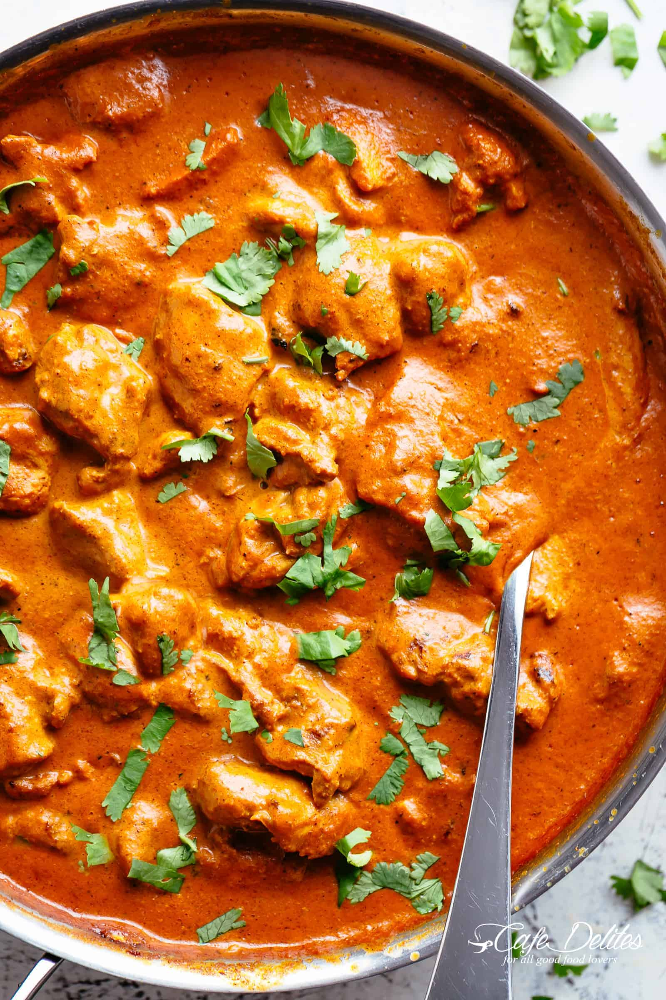

Curry

This is a spicy curry recipe so be warned. To make this curry you need:
- Rice (300g)
- Chicken (200g)
- Coriander (10g)
There are 4 simple steps to making this recipe. They are as follows:
- Heat the vegetable oil and butter in a large, lidded casserole on the hob, then add the onions and a pinch of salt. Cook for 15-20 mins until soft and golden.
- Add the tikka masala paste and peppers, then cook for 5 mins more to cook out the rawness of the spices.
- Add the chicken breasts and stir well to coat in the paste. Cook for 2 mins, then tip in the chopped tomatoes, tomato purée and 200ml water. Cover with a lid and gently simmer for 15 mins, stirring occasionally, until the chicken is cooked through.
- Remove the lid, stir through the mango chutney, double cream and natural yogurt, then gently warm through. Season, then set aside whatever you want to freeze. Will keep, in an airtight container, in the freezer for up to three months. Scatter the rest with coriander leaves and serve with basmati rice and naan bread.
This recipe serves 2 people. If you wish to serve this on a date night, your date will be seriously impressed!